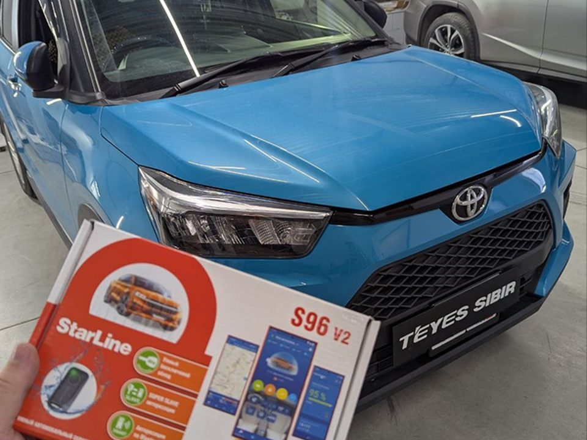

Ставим чаще всего
StarLine S96 V2
Сигнализация с автозапуском и встроенным GSM: управляется из приложения StarLine, в комплекте метки владельца. Брелок управления докупается отдельно. В версиях с GPS приложение показывает, где машина.
9 наших работ, среди них Toyota Raize, Harrier, Corolla Cross, C-HR, Highlander, Mazda CX-3 и Skoda Superb.